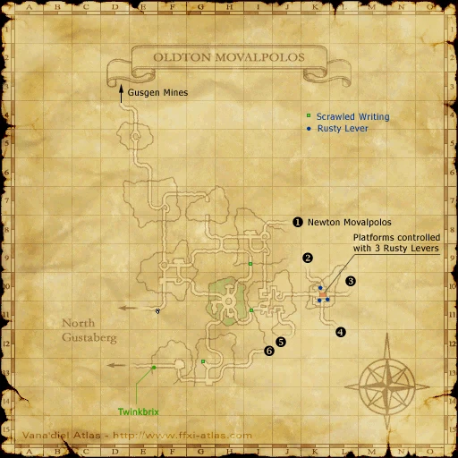
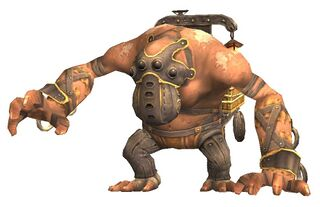
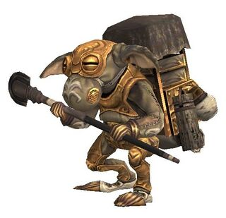
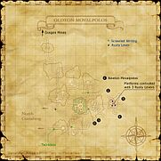

Description
Oldton Movalpolos is a dungeon in Movalpolos.
Map

Involved in Quests / Missions
| Quest / Mission | Type | Starter | Location |
|---|---|---|---|
| A Generous General? | General | Gu'Zho Thunderblade | Oldton Movalpolos (E-13) |
| For the Birds | General | Koblakiq | Oldton Movalpolos (H-11) |
| Out of the Depths | General | Ayame | Metalworks (K-7) |
| A Question of Faith | General | Ayame | Metalworks (K-7) |
| Return to the Depths | General | Ayame | Metalworks (K-7) |
| Tuning In | General | Leepe-Hoppe | Windurst Waters (J-9) |
| Over the Hills and Far Away | Map | Antreneau | Southern San d'Oria (G-7) |
NPCs
| Name | Location | Type |
|---|---|---|
| Bartabaq | pos=F-10 | Outpost Merchant |
| Brakobrik | pos=K-11 | — |
| Gu'Zho Thunderblade | pos=E-13 | NPC (Quest); CS only |
| Koblakiq | pos=H-11 | NPC (Quest) |
| Rakorok | pos=K-10 | NPC (Quest) |
| Tarnotik | pos=K-10 | — |
| Twinkbrix | pos=E-13 | ENM Quest Activator, Warp NPC |
Notorious Monsters
| Name | Level | Drops | Steal | Family | Spawns | Notes |
|---|---|---|---|---|---|---|
| Bugbear Strongman | 50-52 | Aikido Koshita Bugbear Mask Shinimusha Haidate | — |  BugbearsImage source | — | A, L, S |
| Goblin Wolfman | 50-55 | Parade Gorget Goblin Helm Goblin Mail | — |  MoblinsImage source | — | A, L |
| Bugbear Muscleman | 52 | Rugged Gold Thread | — | BugbearsImage source | — | — |
Regular Monsters


Event Monsters
| Name | Level | Drops | Steal | Family | Spawns | Notes |
|---|---|---|---|---|---|---|
| Bugallug | — | — | — | BugbearsImage source | 1 | Spawned Quest: A Question of Faith; A, L, S |
| Bugbear Porterman | — | — | — | BugbearsImage source | 4 | Spawned Quest: A Generous General?; A, L |
| Dread Dealing Dredodak | — | — | — | MoblinsImage source | 1 | Spawned Quest: A Generous General?; A, L |
| Goblin Preceptor | — | — | — | MoblinsImage source | 2 | Spawned Quest: A Generous General?; A, L |
| Grimoire Guru Grimogek | — | — | — | MoblinsImage source | 1 | Spawned Quest: A Generous General?; A, L |
Story walkthroughs in this area
| Story | Mission / quest |
|---|---|
| CoP 5-3L | Past Sins — Louverance’s Path |
| CoP 7-3 | Fire in the Eyes of Men |
| CoP 8-4 | Dawn |
References
External references describe their own server or retail rules. Documented Zenith changes take precedence.
Map credits: Map 1 — HorizonXI Wiki. Original game maps © SQUARE ENIX; redrawn maps retain the credited authorship and license.

Additional level-75 reference
|
The subterranean city of Movalpolos was dug and built by a tribe of Goblins referred to as the Moblins. Due to the nomadic nature of most Goblins, it is extremely rare for any of these beastmen to reside together in one place, making this community extremely unique. The Moblins are known for their exceptional smithing and alchemy skills. Their achievements include complex drilling apparatuses and floodlights, as well as several advancements in exotic fields such as bionics. It is even rumored that their ability in these areas matches or exceeds that of the scientists in Bastok.  Connecting Areas
If you see a quest that is listed as Yes but is not working properly please report it on GitHub. Make sure to list as many details as possible when describing what is not working. If there happens to already be a report on that quest regarding your problem, just add your experience to that report. LegendYes = Quest is in game and working Yes but bugged = Quest is in game but not working properly and being worked on or in que to be worked on. No = Not in game yet but is planned Involved in Quests/Missions
Notorious Monsters Found Here
Mobs Found Here
|
|||||||||||||||||||||||||||||||||||||||||||||||||||||||||||||||||||||||||||||||||||||||||||||||||||||||||||||||||||||||||||||||||||||||||||||||||||||||||||||||||||||||||||||||||||||||||||||||||||||||||||||||||||||||||||||||||||||||||||||||||||||||||||||||||||||||||||||||||||||||||||||||||||||||||||||||||||||||||||||||||||||||||||||||||||||||||||||||||||||||||||||||||||||||||||||||||||


Adapted from Eden Wiki: Oldton Movalpolos · Contributors and history · CC BY-SA 4.0. Revision 45791. Layout, links and optional background text adapted for Zenith.